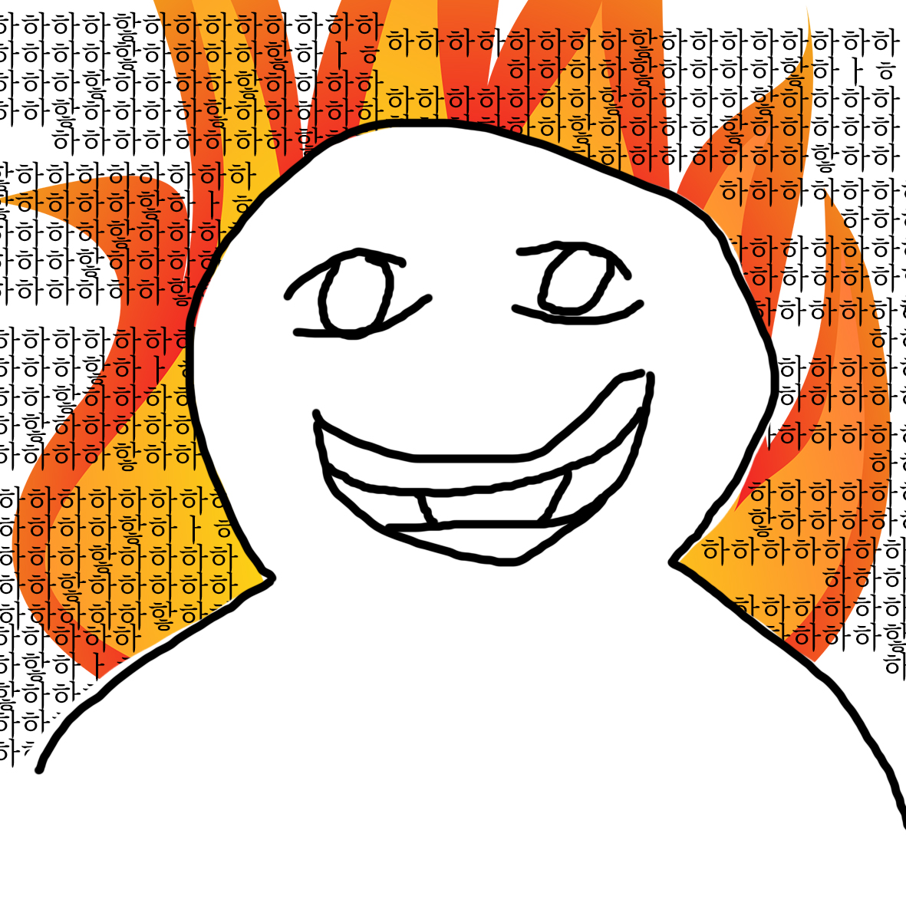
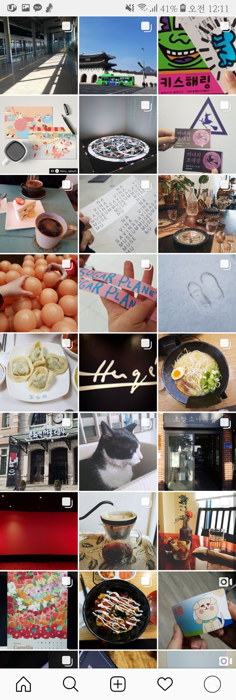
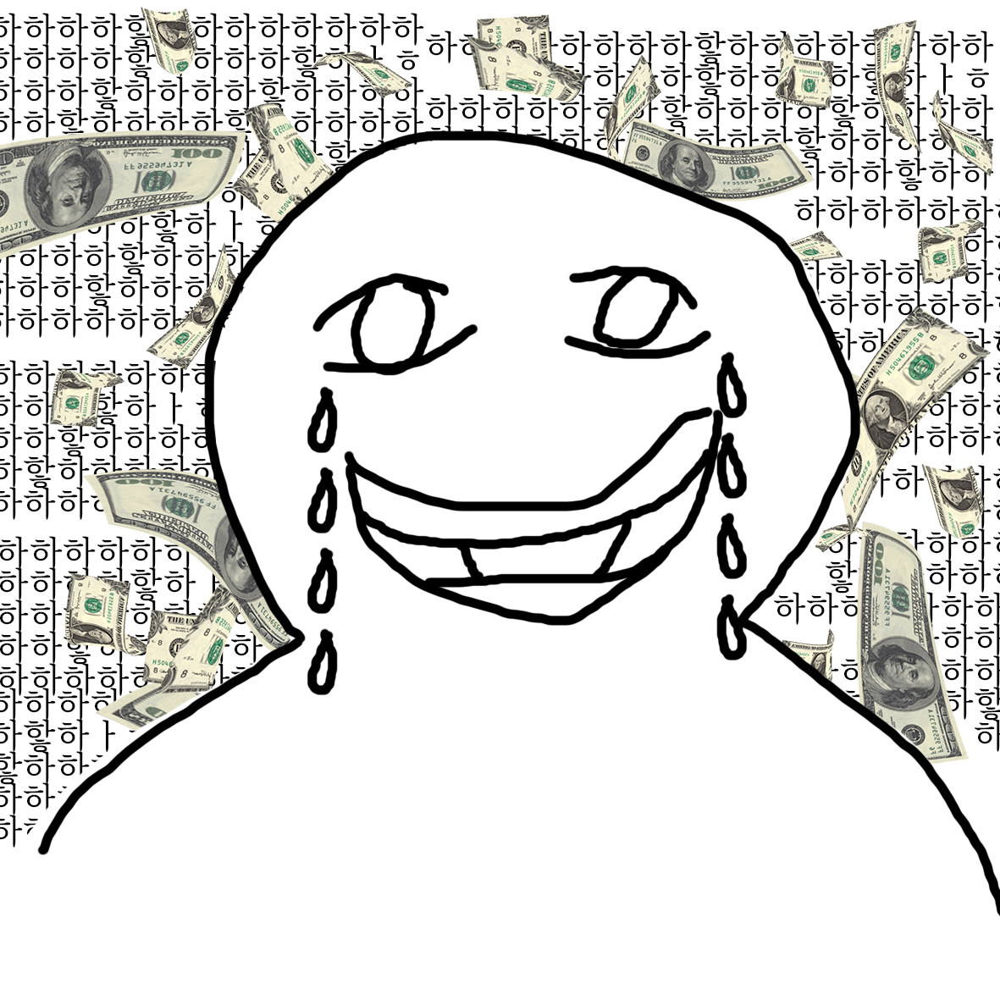

제 1부 : 1월은 과제의 달
1월달은 동아리에서 나가는 일본 박람회로 눈 뜰세 없이 바쁜 한달이었다..
분명 방학을 했는데 과제양은 왜 바뀌지 않는거죠..?
방학을 했지만 안성에서 친구들과 열심히 작업을 했다! 인더페이퍼를 몇번을 갔다왔는지...허허허 또 나는 박람회를 두팀 다 나가서 두배로 바빴다...됴륵 그래도 학교에서 지원받은 돈으로 모든것을 해서 마음놓고 비싼 인쇄들을 마음껏했다!!! 특히 백색인쇄 두번은 겁나게 비쌌다.. 트레이싱지에 출력을 했는데 이 제품은 상용화가 안될 비싼 몸이 되었다.. 그래도 종이 버전도 있었으니까 된거지뭐!

플립북도 만들었다! 유기견 관련해서 만든 플립북이었는데 우리가 원래 하려고 했던 주제들을 함축해서 만들어야 했어서 어떤 내용으로 만들어야 하는지가 어려웠다..이틀동안 전체수정을 세번함...

제 2부 : 2월은 돈을 뿌리고 다닌 달
파란만장한 1월이 끝났다. 나는 안성을 떠나 (탈안성이다ㅏㅏㅏ야호!) 집으로 갔다.
방학을 즐기러 전시회를 다니고 친구들이랑 놀러다니고x1000 행복한 한달이었다..
하루에 전시를 세개씩 보러다닌 날도 있었다!
요즘 전시들 넘우 비싸다 두번보면 3만원이 날라가더라;;
물론 구정때 받은 돈을 이 한달안에 다 써버렸지만...큐ㅠㅠㅠㅠㅠ
돈은 스르르륵 사라져 버렸다.. 비상용으로 남겨둘 돈도 새 가구사는데 써버렸당..쥬륵
